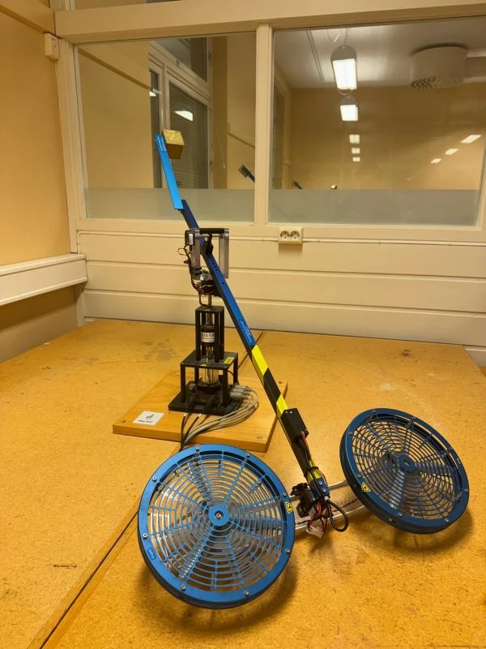
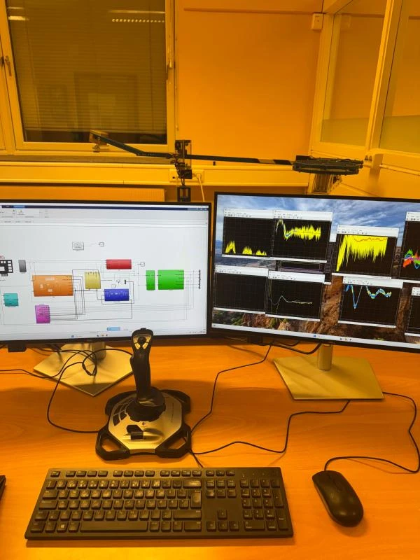
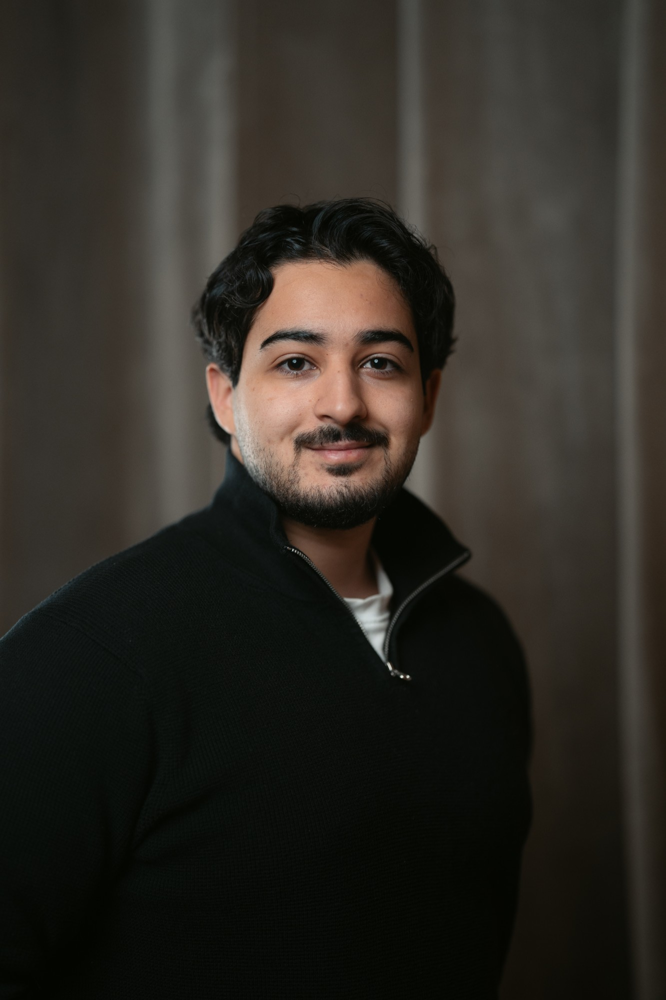
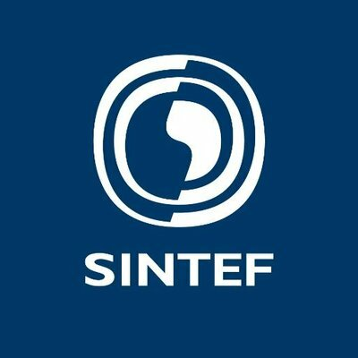
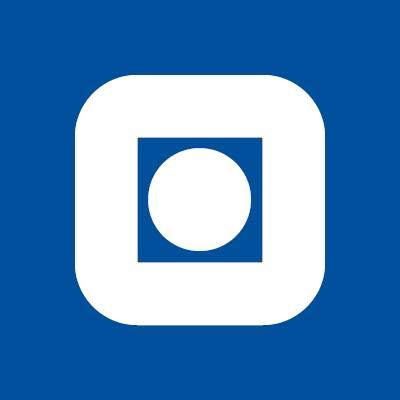
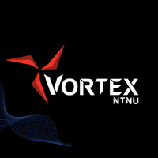
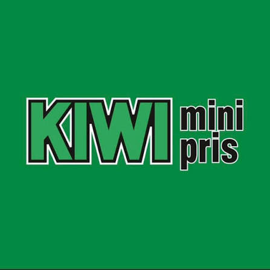

Helicopter Lab
LQR controller with a Kalman filter for state estimation, controlling a physical lab helicopter in MATLAB and Simulink. TTK4115
MSc student in Cybernetics and Robotics at the Norwegian University of Science and Technology (NTNU) in Trondheim, specializing in navigation and vessel control. I build perception and control systems for robots and autonomous vessels with ROS 2, C++ and Python, and I want to work at the intersection where software meets hardware. Lately I have been dabbling in AI, machine learning and data science, and I aspire to work in a broader international and multicultural context.

I'm from Drammen and currently based in Trondheim, in my fourth year at NTNU: the first year of a two-year MSc in Cybernetics and Robotics, specializing in navigation and vessel control, after a BSc in Automation and Intelligent Systems.
Most of my work so far has been perception pipelines, controllers and state estimators running on real robots. In my bachelor thesis at SINTEF Ocean, I built a ROS 2 system that lets a robot arm see and handle kelp seedlings, and at Vortex NTNU I worked on autonomy for underwater and surface vehicles.
All models are wrong, but some are useful.






LQR controller with a Kalman filter for state estimation, controlling a physical lab helicopter in MATLAB and Simulink. TTK4115
Programmed a Mitsubishi PLC (FBD, Ladder, ST) to control and monitor a water tank, with HMI and SCADA interfaces over Modbus and Profibus.
Independent project from autumn 2026: an ESP32 reads soil moisture sensors and switches a pump through an IRLZ44N MOSFET and a Finder 40.61 relay when the soil is dry. Firmware written in C++ with PlatformIO in VS Code, published under NTNU ITK's Microlabs project.